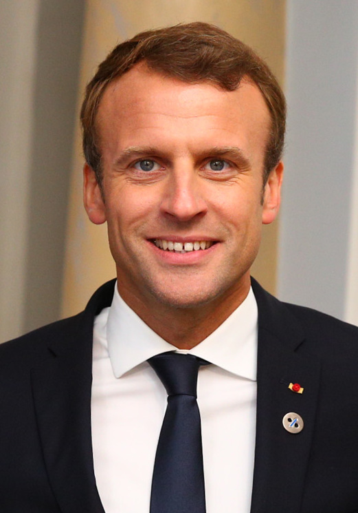
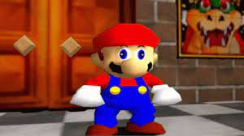
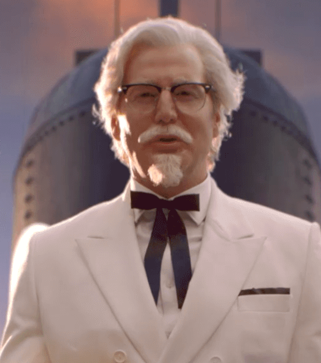
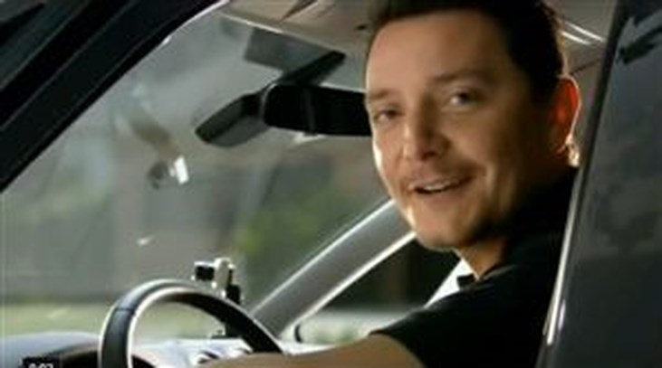

Le contenu de ce site est entièrement fictif.
Toute ressemblance avec la réalité est purement fortuite.
Copyright © 2022 Vienne Mathys. Tous droits réservés.
|  |
Emmanuel Macron est, de nos jours, connu pour être le huitième Président de la Cinquième République. Pourtant, il est un activiste important au sein du Culte de La Sainte Mangue. En effet, il a toujours agi dans le bien de notre communauté en portant, par exemple, devant l'Assemblée nationale, une réforme qui supprimerait la TVA sur les fruits pour que leur prix baisse. Ainsi, il pense pouvoir faire découvrir le bonheur de la mangue au plus de français possible grâce à sa position importante au sein de l'Etat. |
|
Jean-Claude Van Damme est un acteur de nos jours très connu. Certain en ont déjà entendu parler grâce aux nombreux films dans lesquels il a joué ou même grâce à ces scènes filmées devant un fond vert devenues virales sur la toile. Dans ces mêmes scénettes, il est vu arborant de magnifiques lunettes organes: la couleur de la mangue, que dis-je, de La Sainte Mangue. Ces images que tout le monde a au moins vu une fois dans sa vie ne sont en réalité qu'une partie d'une énorme campagne de propagande pour notre organisation. |
|
|
Le Pape François est une personnalité religieuse. Etant donné que notre groupe n'est pas religieux, cela ne l'empêche pas de poursuivre sa foi personnelle et nous de poursuivre notre action entièrement tournée vers la mangue. Cependant, en usant de sa position, il tend à rapprocher les croyants de la vision de la mangue, les deux n'étant pas incompatibles. Rapprocher les gens est un des buts du Pape François et il rapproche les gens qui le suivent de nous, apôtres de La Raison. |
|
|
Cousin éloigné de l'Impostor du jeu Among Us, Amangus cultive des mangues au Pakistan depuis des millions d'années. Autrefois, il cultivait ce fruit sur les terres que nous associons de nos jours à la France. Lors d'un différend avec un Tricératops plutôt du côté de l'Angélique Citron, il s'est vu banni et forcé de trouver refuge dans l'actuel Pakistan. Depuis la nuit des temps, il défend et partage le message La Sainte Mangue autant qu'il le peut pour ne pas laisser tomber ses enseignements dans l'oubli... |
|
|  |
Mario, de son nom complet Mario Mario, est un personnage qui a accompagné toute une génération de joueurs à travers divers jeux tels que ses aventures à travers le royaume de Sarasaland ou encore lors de la fois où il interrompit le mariage de la princesse Peach et de son amant Bowser dans une église sur la lune. Au cours de ses aventures, il prit le temps de se rallier à la mangue et à en faire la propagande via diverses recettes à base d'une variété de ce fruit comme le Mango Delight, le Mango Juice, le Mango Pudding ou tout simplement en transportant des Keel Mango. |
|
Le Colonel Sanders est un personnage important dans le développement des fast-foods dans le monde. En effet, son entreprise Kentucky Fried Chicken eut tellement de succès que la firme devint internationale et arriva même sur le territoire français. Il profita de cette influence pour proposer à la vente des desserts contenant de la mangue. En laissant penser que l'entreprise s'inquiète du bien-être de sa clientèle, le Colonel Sanders permet à la population de gouter à la chair de Le Sainte Mangue. |
 |
|  |
Olivier, employé modèle chez Carglass depuis si longtemps qu'on ne compte plus les années, est aujourd'hui connu de quasiment tous les Français. Il incarne un professionnalisme et un altruisme qui se font si rare dans le monde professionnel. A chaque changement de pare-brise, il tentera de vous remettre un kit de nettoyage automobile saveur mangue, vous poussant donc à découvrir la magnificence de la mangue par une odeur douce qui vous accompagnera dans votre automobile durant tous vos trajets. |
|
Dwayne Johnson, surnommé The Rock, est un acteur, producteur et catcheur américano-canadien. Aujourd'hui, vous l'avez peut-être aperçu dans des films tels que Jumanji ou Jungle Cruise. Pourtant, lorsqu'il pratiquait encore activement le catch, il s'est servi d'un instant où il était certain de ne pas être découvert pour diffuser un message de propagande pour la mangue. |
Et bien d'autres...